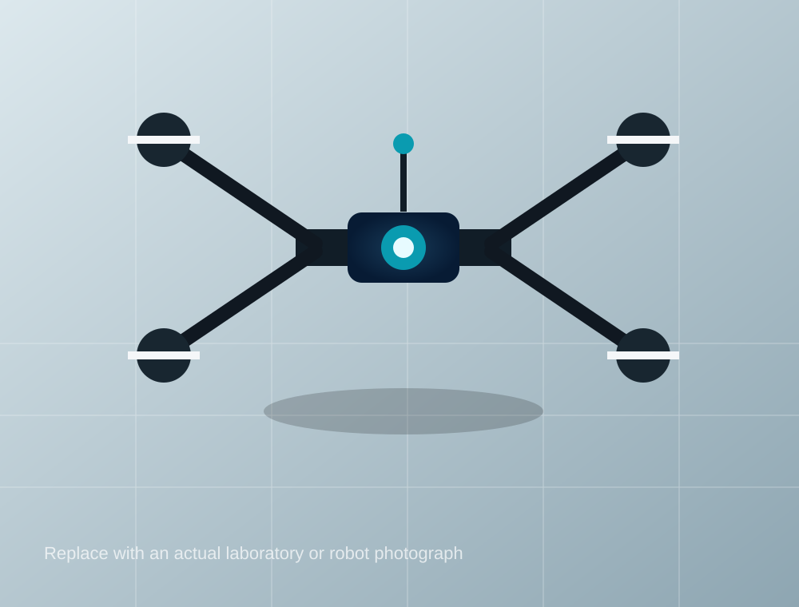

Learning-Augmented Adaptive Control
Model-based adaptive control with reinforcement learning for enhanced performance.
Quanser AERORLAdaptive Control
Research at the intersection of control theory, learning, and robotics, with emphasis on safe, efficient, and experimentally validated autonomous systems.

Adaptive, robust, and optimal control methods for nonlinear and uncertain systems.
Learn more →Reinforcement learning and data-driven methods for control and decision making.
Learn more →Perception, planning, estimation, and control for autonomous robotic platforms.
Learn more →Data-driven modeling, system identification, and intelligent optimization.
Learn more →Model-based adaptive control with reinforcement learning for enhanced performance.
Perception and control for safe and efficient autonomous navigation.
Control and coordination of multi-robot systems for collective tasks.
IEEE Transactions on Automatic Control, 2026
Automatica, 2025
IEEE Transactions on Robotics, 2025
Our paper on learning-augmented adaptive control was accepted.
A new project on safe autonomous navigation has started.
A new graduate researcher joined the group.
The team completed a robotic platform demonstration.
Graduate, undergraduate, and collaborative research opportunities are listed in one place.